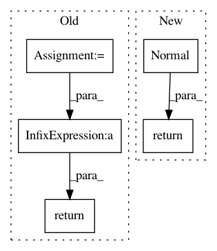

cbfd111192d2b1ed7a43ebfac3178d31b844b4cd,gpytorch/likelihoods/gaussian_likelihood.py,_GaussianLikelihoodBase,forward,#_GaussianLikelihoodBase#Any#,20
Before Change
else:
// here shape[:-1] is the batch shape requested, and shape[-1] is `n`, the number of points
shape = mean.shape
noise_covar = self.noise_covar(*params, shape=shape)
full_covar = covar + noise_covar
return input.__class__(mean, full_covar)
def variational_log_probability(self, input, target):
raise NotImplementedError
After Change
return self.noise_covar(*params, shape=shape)
def forward(self, function_samples, *params, **kwargs):
return base_distributions.Normal(
function_samples, self._shaped_noise_covar(function_samples.shape, *params).diag()
)
def marginal(self, function_dist, *params, **kwargs):
mean, covar = function_dist.mean, function_dist.lazy_covariance_matrix
full_covar = covar + self._shaped_noise_covar(mean.shape, *params)
In pattern: SUPERPATTERN
Frequency: 3
Non-data size: 5
Instances
Project Name: cornellius-gp/gpytorch
Commit Name: cbfd111192d2b1ed7a43ebfac3178d31b844b4cd
Time: 2019-03-26
Author: gpleiss@gmail.com
File Name: gpytorch/likelihoods/gaussian_likelihood.py
Class Name: _GaussianLikelihoodBase
Method Name: forward
Project Name: pymc-devs/pymc3
Commit Name: b2566d099e6b0b4cc8c3958638d06ad3c87eee41
Time: 2010-01-06
Author: anand.prabhakar.patil@15d7aa0b-6f1a-0410-991a-d59f85d14984
File Name: pymc/tests/test_graph.py
Class Name:
Method Name: mymodel
Project Name: pymc-devs/pymc3
Commit Name: 9f7d418c4eae41ded178402ab07538910c11b07a
Time: 2009-12-10
Author: anand.prabhakar.patil@gmail.com
File Name: pymc/tests/test_graph.py
Class Name:
Method Name: mymodel